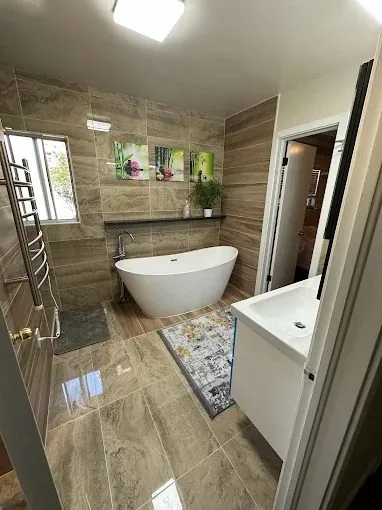
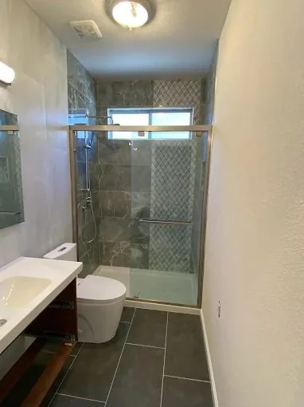
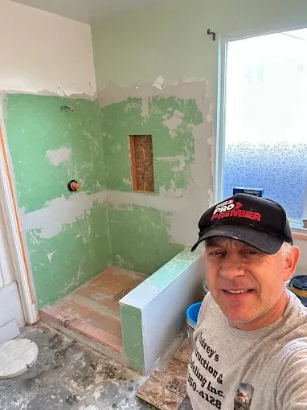

Cost Guide
How Much Does a Bathroom Remodel Cost in Fresno? (2025 Guide)
A straight-talk breakdown of what Fresno homeowners actually pay for bathroom remodels — from basic refreshes to full gut rebuilds — with no fluff.
Honest advice from a working contractor — bathroom remodel costs, timelines, design ideas, and what to ask before hiring anyone in Fresno.

A straight-talk breakdown of what Fresno homeowners actually pay for bathroom remodels — from basic refreshes to full gut rebuilds — with no fluff.
Should you replace your tub with a walk-in shower? An honest take on cost, resale value, and which makes sense for your specific bathroom.

Porcelain, ceramic, or natural stone? After setting thousands of sq ft of tile in Central Valley homes, here's what actually holds up — especially with hard water.

Before you hire any contractor for your Fresno bathroom remodel, ask these 7 questions — including the red flags most homeowners miss until it's too late.
Don't just read about it — get a free estimate from Andrey himself.